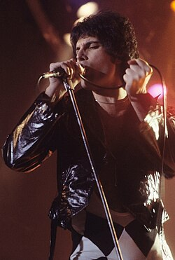

Freddie Mercury (1946-1991), nacido como Farrokh Bulsara en Zanzíbar, fue un icónico cantante y compositor británico, líder de la banda de rock Queen. Conocido por su voz prodigiosa y carisma inigualable, formó Queen en 1970 tras mudarse a Londres. Fue el autor de éxitos inmortales como "Bohemian Rhapsody" y falleció en 1991, consolidándose como una de las mayores leyendas del rock.
Nacido en 1946 en Zanzíbar , de padres indios pertenecientes a la comunidad parsi , Mercury asistió a internados británicos en la India desde los ocho años y regresó a Zanzíbar tras finalizar la secundaria. En 1964, su familia huyó de la Revolución de Zanzíbar y se trasladó a Middlesex , Inglaterra. Tras haber estudiado y compuesto música, formó Queen en 1970 con el guitarrista Brian May y el baterista Roger Taylor . Mercury escribió numerosos éxitos para Queen, entre ellos " Killer Queen ", " Bohemian Rhapsody ", " Somebody to Love ", " We Are the Champions ", " Don't Stop Me Now " y " Crazy Little Thing Called Love ". Sus carismáticas actuaciones en directo a menudo lo llevaban a interactuar con el público, como se pudo apreciar en el concierto Live Aid de 1985. También desarrolló una carrera en solitario y fue productor y músico invitado de otros artistas.
Mercury fue diagnosticado con SIDA en 1987. Continuó grabando con Queen y participó póstumamente en su último álbum, Made in Heaven (1995). En 1991, al día siguiente de anunciar públicamente su diagnóstico, falleció a los 45 años a causa de complicaciones derivadas de la enfermedad
